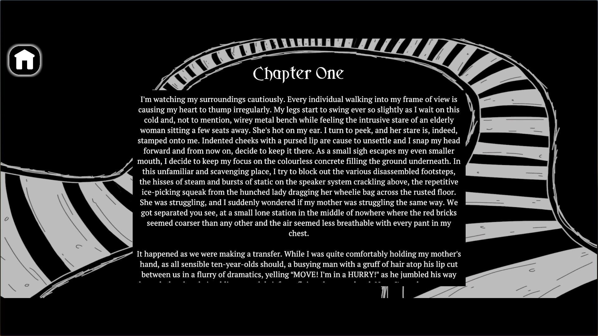

This page features written and miscellaneous recreational work, inspired by music, social topics and external stimuli. Feel free to browse and read at a comfortable pace!
-
 'Jordan Is Pitiful' is a short piece of social fiction. Written intially in 2023 while I
was on holiday in Thailand and later continued in summer 2024, it follows a situation
concerning main character 'Jordan' and a conversation he has with himself while being
surrounded by family at an all-inclusive resort. As well as the fictive text, my own
analysis and thoughts on the piece are included as commentary.
'Jordan Is Pitiful' is a short piece of social fiction. Written intially in 2023 while I
was on holiday in Thailand and later continued in summer 2024, it follows a situation
concerning main character 'Jordan' and a conversation he has with himself while being
surrounded by family at an all-inclusive resort. As well as the fictive text, my own
analysis and thoughts on the piece are included as commentary.
-  'Phantom Maternal: The Text' is the raw narrative for my Dissertation Project, in which fictive text and virtual environments are used in conjunction to create a symbiotic and multi-media story. The narrative concerns a ten-year old boy named George who becomes separated with his mother at a small-town train station, only to wind up on a connection that, despite bringing him home in the end, takes him on a journey full of fear, confusion and mystery.